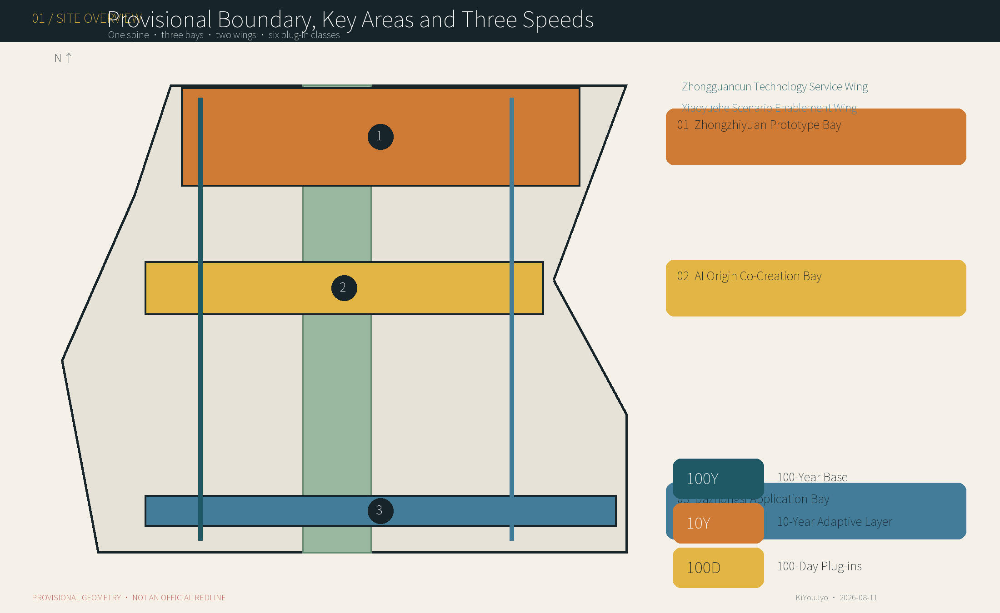
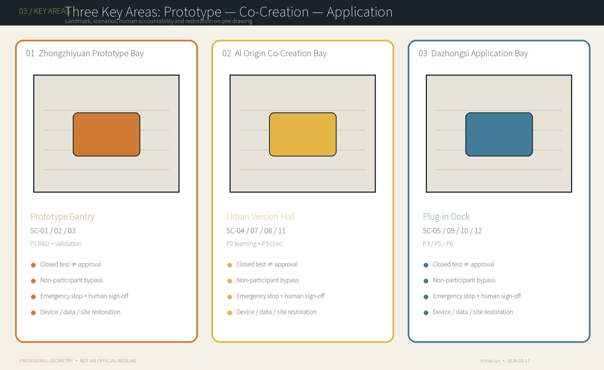
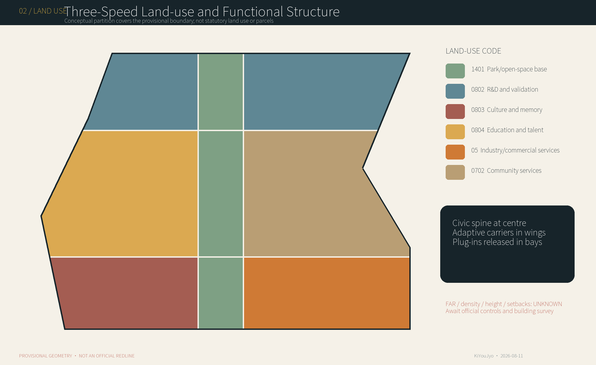
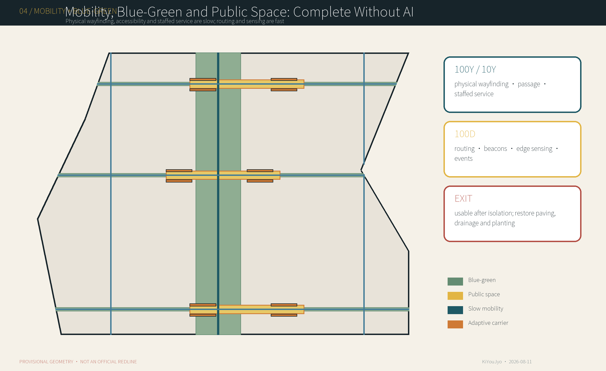
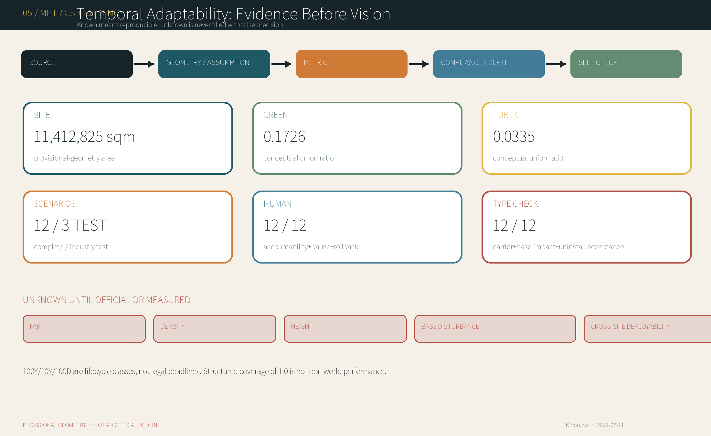

Prototype Gantry
A demountable, non-monumental test gantry displaying plug-in ID, version, status, accountable human and emergency stop. The gantry is 10Y, equipment is 100D, and siting/span/foundation/load await review.
100Y / 10Y / 100D · Jing-Zhang Three-Speed City
Let the City Outlive the Model.
Only rough provisional geometry is available. It is not an official redline, approval basis or precise statutory area. Regenerate the whole package when official data arrive.
Heritage, civic rights, blue-green systems, basic mobility, accessibility, services and memory.
Vendor-neutral shared ground floors, open interfaces, service strips and maintainable carriers.
Replaceable agents, robots, edge devices, services and events.

Coordinated research, overall design and key areas share one evidence chain; the numbers are lifecycle classes, not legal schedules.
Heritage, civic rights, blue-green systems, basic mobility, accessibility, services and memory.
Vendor-neutral shared ground floors, open interfaces, service strips and maintainable carriers.
Replaceable agents, robots, edge devices, services and events.

A demountable, non-monumental test gantry displaying plug-in ID, version, status, accountable human and emergency stop. The gantry is 10Y, equipment is 100D, and siting/span/foundation/load await review.
An adaptable public room for deliberation, model audit, open learning, release and correction. Prioritise adaptive reuse; tenure, capacity, fire and reuse value await survey.
A module docking, inspection, repair, storage, return and recovery node closing the arrival–acceptance–operation–exit–restoration loop; scale follows transport, noise, fire, heritage and public-space capacity.

The slow spine, wing cycle interfaces and east-west stitches are conceptual alignments, not road redlines or transport approval.

After AI is off, public space retains passage, seating, physical wayfinding, accessibility and staffed service.
Twelve building polygons are conceptual 10Y carriers; without a building survey, no retain/renovate/demolish decision is made.
Verify official boundaries, three areas, roads, parcels, buildings, heritage, utilities, facilities and safety evidence before engineering
Organise heritage narrative, continuous walking, accessibility, blue-green systems and physical wayfinding without promising a permanent section
Create a time-shared, closable and restorable test ground with the Prototype Gantry
Provide adaptable ground floors, shared classrooms, prototype pods, co-design and the Urban Version Hall
Host micro-retail, public demonstration, global events and the Plug-in Dock
Link R&D, professional services, incubation and knowledge networks; scope awaits industry and tenure surveys
Link communities, ecology, public services and real-use feedback
Join shade, stormwater, walking, cycling and accessibility; targets await survey, hydrology and transport studies
Standardise power/data, isolation, metering, maintenance and exit interfaces to reduce vendor lock-in
Coordinate railway records, plug-in versions, audits, rollback and material records
Organise emergency stop, fire safety, module movement, repair, storage and restoration acceptance
Complete statutory controls, transport, structure, fire, building services, landscape, resilience and cost work after official evidence arrives
SC-01–03 are industry tests/validation, not approval. Humans release, pause and exit every scenario.
Test accessibility, safety and exit capacity of low-speed delivery, inspection and cleaning robots in a real public-space setting; results are not product approval, regulatory certification or permission for routine operation.
Interface: Carrier IF-ZY-01; no direct 100Y contact
Accountable: joint sign-off by the yard safety lead and each device test lead
Rollback/restoration: stop and isolate power, remove devices and temporary charging, preserve logs; failed tests cannot become routine services remove anchors and restore modular paving, drainage, planted edges and continuous passage
Enable public and professional evaluation of accuracy, bias, explainability and human takeover under controlled conditions; evaluation is not model approval.
Interface: Carrier IF-ZY-02; no direct 100Y contact
Accountable: service owner, independent evaluation lead and privacy lead
Rollback/restoration: withdraw the model, switch to staffed service, delete temporary data under policy and retain the necessary audit summary after terminal removal, return the room to ordinary public service or teaching
Test durability, privacy boundaries and maintainability of local computing, sensing and urban-furniture interfaces; not municipal type approval or procurement.
Interface: Carrier IF-ZY-03; no direct 100Y contact
Accountable: municipal facility operator and test-device owner
Rollback/restoration: physically isolate power, remove modules, cap interfaces and delete non-essential cache restore ordinary furniture function, paving, drainage and accessible clearance
Teach model principles, limits, open tools and urban problem practice.
Interface: Carrier IF-AO-01; no direct 100Y contact
Accountable: course owner, teacher and venue operator
Rollback/restoration: disable the model, return to teacher-led delivery and clear temporary accounts/data remain an ordinary classroom and community room after terminal removal
Connect Jing-Zhang railway engineering, local industrial memory and current innovation through verifiable interpretation.
Interface: Carrier IF-JZ-01; no direct 100Y contact
Accountable: heritage curator and rights steward
Rollback/restoration: withdraw the digital version, use reviewed static content and remove temporary equipment no permanent anchors in heritage fabric; restore surfaces and landscape
Provide consistent walking and interchange information for older people, disabled people, families and international visitors.
Interface: Carrier IF-SPINE-01; no direct 100Y contact
Accountable: transport/site operator and accessible-information owner
Rollback/restoration: disable smart routing and fall back to static maps, staffed help and fixed signs repair surfaces after beacon removal without weakening existing wayfinding
Offer low-barrier shared prototyping, review and demonstration space for startups and small teams.
Interface: Carrier IF-AO-02; no direct 100Y contact
Accountable: facility manager and each tenant project owner
Rollback/restoration: revoke access, export data, clear environments and remove equipment/interiors return to a standard shell or public workspace
Let residents and public-service staff define problems, test processes and trace responses together.
Interface: Carrier IF-AO-03; no direct 100Y contact
Accountable: public-service owner and independent facilitator
Rollback/restoration: disable automated summaries, use human records and delete recordings/temporary data under policy return to community meeting and consultation after device removal
Test small, low-fit-out retail formats that retain staffed service.
Interface: Carrier IF-DZS-01; no direct 100Y contact
Accountable: licensed retailer and venue operator
Rollback/restoration: switch to staffed POS, disconnect smart systems and remove equipment/fit-out restore standard shell, continuous paving and public frontage
Provide a public, challengeable demonstration ground with explicit limitations.
Interface: Carrier IF-DZS-02; no direct 100Y contact
Accountable: event producer and each demonstration owner
Rollback/restoration: stop, isolate power, remove products/structures and preserve necessary incident evidence restore plaza paving, planting, drainage and accessible routes
Expose model scope, evidence, risks and correction so independent review and public appeal are possible.
Interface: Carrier IF-AO-04; no direct 100Y contact
Accountable: independent audit lead and the responsible human public decision-maker
Rollback/restoration: pause the model and restore human procedure; preserve evidence and clear sensitive public-terminal data remain a public hearing and archive-reading room after exhibit removal
Use reusable modules for cross-cultural exchange, exhibitions and developer events.
Interface: Carrier IF-DZS-03; no direct 100Y contact
Accountable: event organiser, data-protection lead and on-site safety lead
Rollback/restoration: disable smart service, use paper/staffed process, return modules and delete data on schedule restore plaza, lawn, paving, drainage and fire access

Matrices connect 23 tasks, five mandatory standards and fifteen depth items to proposal, drawings, geometry, metrics, sources, assumptions and self-check.
District digital base, virtual test and controlled field test with tiered data access.
Limit: Singapore land/regulatory integration and reported sensor scale are not transferable targets.
Mixed knowledge production, housing, facilities and public space with infrastructure recalibrated by phase.
Limit: Catalan planning law and historic development-right ratios cannot become Beijing controls.
Triple-Helix regional governance, a professional delivery body and shared-site operations.
Limit: A privately managed specialist campus is not a complete mixed city; open innovation is not unconditional IP openness.
Prototype garage, controlled field and lived-environment test sequence.
Limit: Operator-reported small samples are not independent long-term evidence.
Open call, co-development, real-world trial and evaluation, including rapid identification of dead ends.
Limit: Finnish pilots were often around six months and used different procurement/funding systems.
Formal reviews exposed gaps in accountability, data flows, procurement, fallback, maintenance and minimum viable alternatives.
Limit: Privacy controversy cannot be asserted as the single direct cause of withdrawal.
Final state persists deterministic, spatial, visual and professional gates; local PASS is not official approval.
sources.json · official announcement · agent taskbook · repository provisional geometry · six primary-source global cases.
assumptions.json · official boundary · key areas · controls · roads · parcels · buildings · heritage · utilities/safety · public facilities.